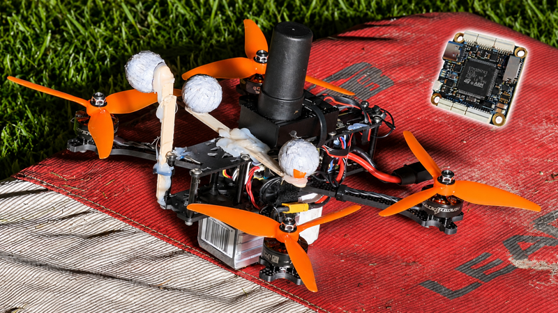
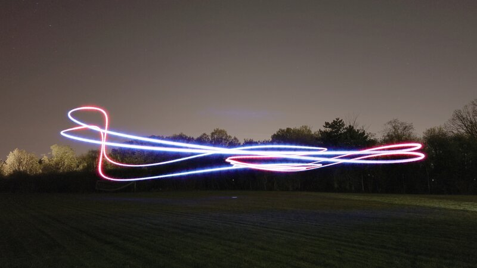
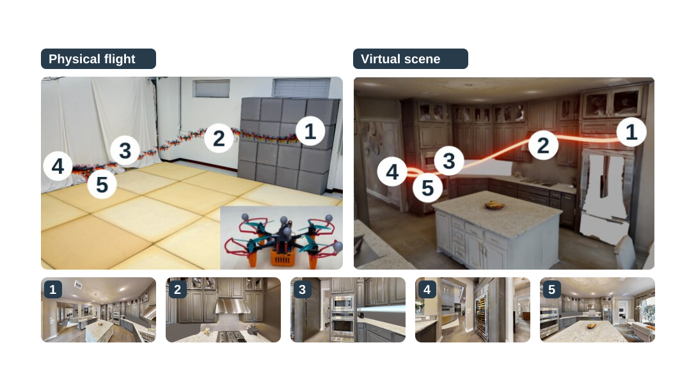
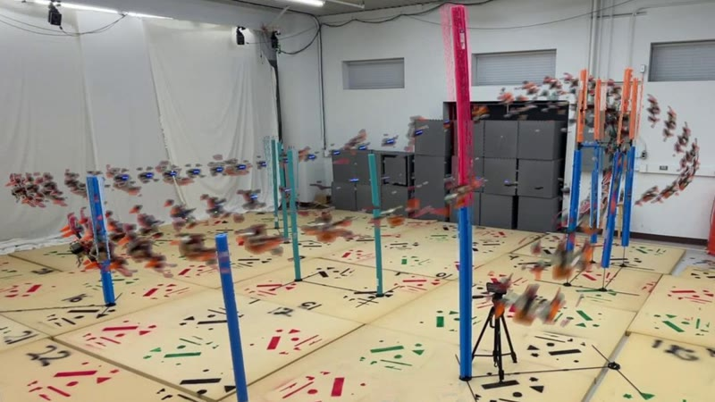
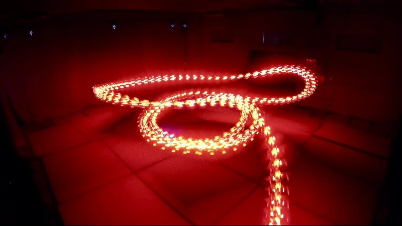

Mimic-Free Humanoid Loco-Manipulation via Agentic Reset Synthesis
Yifan Lin, Bowen Li, et al., Wenshan Wang, Sebastian Scherer
On Going
I’m an undergrad student at the University of Toronto in the Engineering Science program (EngSci 2T7 + PEY).
I’m also a Research Assistant at Carnegie Mellon University’s Robotics Institute, advised by Prof. Sebastian Scherer and Dr. Wenshan Wang. My work there is part of my Professional Experience Year (PEY) Co-op.
Previously, I was fortunate to work with Prof. Hugh Liu at U of T on autonomous drone racing and Dr. Ji Zhang at CMU on vision-language navigation.
Yifan Lin, Bowen Li, et al., Wenshan Wang, Sebastian Scherer
On Going
Bowen Li*, Ziyong Ma*, Yifan Lin*, et al., Guanya Shi, Sebastian Scherer
On Going

Chao Qin, Yifan Lin, Jiaxu Xing, Rudolf Reiter, Angel Romero, H. S. Helson Go, Davide Scaramuzza, Hugh H.-T. Liu
In Submission



Chao Qin, Jiaxu Xing, Rudolf Reiter, Angel Romero, Yifan Lin, Hugh H.-T. Liu, Davide Scaramuzza
In Submission
